The cassowaryr package provides functions to compute scagnostics on pairs of numeric variables in a data set.
The term scagnostics refers to scatter plot diagnostics, originally described by John and Paul Tukey. This is a collection of techniques for automatically extracting interesting visual features from pairs of variables. This package is an implementation of graph theoretic scagnostics developed by Wilkinson, Anand, and Grossman (2005) in pure R.
remotes::install_github("numbats/cassowaryr")
library(cassowaryr)
library(ggplot2)
library(dplyr)
#>
#> Attache Paket: 'dplyr'
#> The following objects are masked from 'package:stats':
#>
#> filter, lag
#> The following objects are masked from 'package:base':
#>
#> intersect, setdiff, setequal, union
# pick examples
exampledata <- datasaurus_dozen %>%
filter(dataset==c("v_lines", "circle", "dots", "away"))
#> Warning in dataset == c("v_lines", "circle", "dots", "away"): Länge des längeren Objektes
#> ist kein Vielfaches der Länge des kürzeren Objektes
#plot them
exampledata %>%
ggplot(aes(x=x,y=y, colour=dataset))+
geom_point() +
facet_wrap("dataset")
#compute scagnostics
exampledata %>%
group_by(dataset) %>%
summarise(monotonic=sc_monotonic(x,y),
dcor=sc_dcor(x,y),
splines=sc_splines(x,y),
skinny = sc_skinny(x,y),
convex = sc_convex(x,y),
striated = sc_striated(x,y),
stringy = sc_stringy(x,y),
) %>%
knitr::kable(digits=4, align="c")| dataset | monotonic | dcor | splines | skinny | convex | striated | stringy |
|---|---|---|---|---|---|---|---|
| away | 0.0875 | 0.2417 | 0.089 | 0.1821 | 0.8561 | 0.3333 | 0.8276 |
| circle | 0.0499 | 0.2597 | 0.004 | 0.8383 | 0.0003 | 0.8611 | 1.0000 |
| dots | 0.0391 | 0.1570 | 0.000 | 0.1338 | 0.9203 | 0.3333 | 0.8276 |
| v_lines | 0.0801 | 0.1757 | 0.000 | 0.0868 | 0.9292 | 0.5714 | 0.7778 |